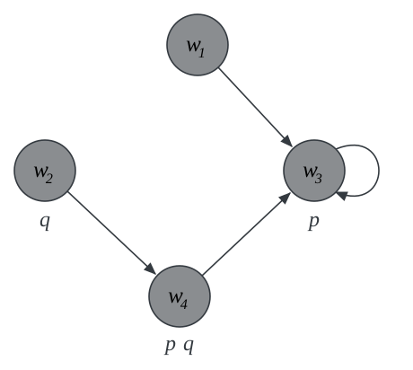

PHIL 452 · Modal Logic
In logic, we make a distinction between true and false propositions.
Modal logic makes further distinctions between different ways in which propositions may be true or false.
We expand the language of propositional logic with a propositional operator \(\Box\) for necessity, and a dual operator \(\Diamond\) for possibility.
| modality | \(\Box\) | \(\Diamond\) |
|---|---|---|
| alethic | necessarily | possibly |
| temporal | always | sometimes |
| epistemic | it is known | for all it is known |
| deontic | obligatory | permitted |
One formal framework, different subject matters.
We let \(p\) be the proposition that God exists:
1 Necessarily, if God exists, then God exists necessarily. \(\Box (p \to \Box p)\) premise
2 It is possible that God exists. \(\Diamond p\) premise
3 It is possible that God exists necessarily. \(\Diamond \Box p\) from 1, 2
4 God exists. \(p\) from 3
There is the step from 1 and 2 to 3:
\[ \Box (p \to \Box p) \Longrightarrow \ (p \to \Box p) \] \[ (p \to \Box p) \Longrightarrow \ (\Diamond p \to \Diamond \Box p) \]
Focus on the step from 3 to 4:
\[ \Diamond \bbox[3px, #fff3bf]{\Box p} \ \Longrightarrow \ p \]
If the highlighted proposition \(\Box p\) is true at some accessible world, then \(p\) is true.
1 Necessarily, if God exists, then God exists necessarily. \(\Box (p \to \Box p)\) premise
2 It is possible that God does not exist. \(\Diamond \neg p\) premise
3 God does not exist. \(\neg p\) from 1, 2
The crucial step now takes us from 1 and 2 to 3.
\[ \Box (p \to \Box p) \Longrightarrow \ (p \to \Box p) \]
\[ (p \to \Box p) \Longrightarrow \ (\neg \Box \neg p \to \neg p) \]
\[ (\neg \Box \neg p \to \neg p) \Longrightarrow \ (\Diamond \neg p \to \neg p) \]
The next argument takes place in a multi-modal language.
it will once be the case that
it has always been the case that
it is necessary that
1 If there will be a sea battle tomorrow, then it has always been the case that there would be one. \(\textsf{F} p \to \textsf{H}\textsf{F} p\) premise
2 If it has always been the case that there would be one, then necessarily it has always been the case. \(\textsf{H}\textsf{F} p \to \Box \textsf{H}\textsf{F} p\) premise
3 If necessarily it has always been the case, then necessarily there will be a sea battle. \(\Box \textsf{H}\textsf{F}p \to \Box \textsf{F} p\) premise
4 If there will be a sea battle tomorrow, then necessarily so. \(\textsf{F}p \to \Box \textsf{F} p\) 1, 2, 3
If the past is closed, that is, then there is no reason to expect the future to be open.
The inference is propositionally valid, which means that the pressure falls on the premises of the argument.
Focus on premise 2:
\[ \textsf{H}\textsf{F} p \to \bbox[3px, #fff3bf]{\Box \textsf{H}\textsf{F} p} \]
That is one step that a friend of the open future will want to resist.
The challenge is a framework in which the past is closed while the future stays open.
Propositional connectives are truth-functional: the truth value of a complex proposition is a function of the truth values of its parts.
The truth value of a conjunction is fixed by the truth values of its conjuncts. That is what a truth table records.
\[ \begin{array}{|c|c|} \hline \varphi & \Box \varphi \\ \hline T & ? \\ \hline F & F \\ \hline \end{array} \]
if \(\varphi\) is false, \(\Box \varphi\) is false.
if \(\varphi\) is false, however, it is open whether \(\Box \varphi\) is true or false, e.g., \(\Box\varphi\) will be true if \(\varphi\) is a tautology, but it will be false is \(\varphi\) is merely contingent.
maybe we will do better if we add more truth values into the mix.
\[ \begin{array}{|c|c|c|} \hline \varphi & \neg \varphi & \Box \varphi\\ \hline T & F & T\\ \hline t & f & F\\ \hline F & T & F\\ \hline f & t & F\\ \hline \end{array} \]
This appears to take care of negation and \(\Box\).
Consider a binary connective such as the conditional:
\[ \begin{array}{|c|c|c|c|c|} \hline \to & T & t & F & f\\ \hline T & T & t & F & f \\ \hline t & T & ? & F & f\\ \hline F & T & T & T & T \\ \hline f & T & t & t & ?\\ \hline \end{array} \]
Suppose \(\varphi\) and \(\psi\) are both contingently true. What should the finer-grained truth value of \(\varphi \to \psi\) be?
The finer-grained truth values of \(\varphi\) and \(\psi\) fail to determine a unique finer-grained truth value for \(\varphi \to \psi\).
We must look elsewhere.
Propositions differ not only in whether they are true, but in the circumstances under which they are true.
Both propositions are true …
… but there are possible circumstances under which one is true and the other false.
a complete specification of a way things might be.
We may then ask whether a sentence is true at a possible world: whether that world specifies a way things might be under which the sentence is in fact true.
a world \(u\) is accessible from a world \(w\) if \(u\) is possible relative to \(w\).
That is, \(u\) is a way things might be, given how things are at \(w\)
\(u\) is nomologically possible relative to \(w\) if \(u\) is consistent with the laws of nature that are in force at \(w\)
\(u\) is epistemically possible relative to \(w\) if \(u\) is consistent with all that is known at \(w\)
three ingredients: possible worlds, how they are related to each other, and what is the case at each world.

four worlds
a binary relation \(R\) on the four worlds
a valuation:
\(p\) is true at \(w_3\) and \(w_4\), and nowhere else.
\(q\) is true at \(w_2\) and \(w_4\), and nowhere else.
\(\Box p\) is true at all worlds, since only \(p\)-worlds are accessible from each world.
\(p \to \Box p\) is true at all worlds.
\(\Box (p \to \Box p)\) is true at all worlds
\(\Diamond p\) is true at all worlds.
\(\Diamond \Box p\) is true at all worlds, since only \(\Box p\)-worlds are accessible from each world.
\(p\) is true at \(w_3\) and \(w_4\), but nowhere else.
Two worlds, \(w_1\) and \(w_2\), verify the premises of the ontological argument, but not the conclusion.
The framework provides a way to answer the question ‘does it follow?’.
And the answer, in this model, is no.
The argument turns on the structure of the accessibility relation: it is valid if we restrict attention to models whose relation is symmetric, or to models whose relation is reflexive and euclidean.
The terms symmetric',reflexive’, `euclidean’ refer to specific features of binary relations, and we will discuss them next.